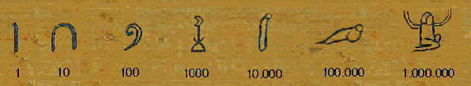

Un sistema de numeración es un conjunto de símbolos y reglas de generación que permiten construir todos los números válidos en el sistema.
Cualquier sistema consta fundamentalmente de una serie de elementos que lo conforman, una serie de reglas que permite establecer operaciones y relaciones entre tales elementos.
Por ello, puede decirse que un sistema de numeración es el conjunto de elementos (símbolos o números), operaciones y relaciones que por intermedio de reglas propias permite establecer el papel de tales relaciones y operaciones.
Clasificacion de los sistemas de numeracion
Los sistemas de numeración pueden clasificarse en tres grupos que son:
1. S. Numeración No-posicionales.
2. S. Numeración Semi-posicionales.
3. S. Numeración posicionales.
En los sistemas no-posicionales los dígitos tienen el valor del símbolo utilizado, que
no depende de la posición (columna) que ocupan en el número.
Por ejemplo, el sistema de numeración egipcio es no posicional, en cambio el
babilónico es posicional. Las lenguas naturales poseen sistemas de numeración
posicionales basados en base 10 o 20, a veces con subsistemas de cinco
elementos. Además, en algunas pocas lenguas los numerales básicos a partir de
cuatro tienen nombres basados en numerales más pequeños.
SISTEMA DE NUMERACIÓN NO-POSICIONAL.
Estos son los más primitivos se usaban por ejemplo los dedos de la mano para
representar la cantidad cinco y después se hablaba de cuántas manos se tenía.
También se sabe que se usaba cuerdas con nudos para representar cantidad. Tiene
mucho que ver con la coordinabilidad entre conjuntos. Entre ellos están los sistemas
el antiguo Egipto, el sistema de numeración romana, y los usados en Mesoamérica
por mayas, aztecas y otros pueblos.
En los sistemas no-posicionales los dígitos tienen el valor del símbolo utilizado, que
no depende de la posición (columna) que ocupan en el número.

Sistema de numeración Semi-posicionales.
Sistema de los números romanos no es estrictamente posicional. Por esto, es muy
complejo diseñar algoritmos de uso general (por ejemplo, para sumar, restar,
multiplicar o dividir). Como ejemplo, en el número romano XCIX (99 decimal) los
numerales X (10 decimal) del inicio y del fin de la cifra equivalen siempre al mismo
valor, sin importar su posición dentro de la cifra.
Sistema de numeración Posicionales.
En los sistemas de numeración ponderados o posicionales el valor de un dígito
depende tanto del símbolo utilizado, como de la posición que ése símbolo ocupa en
el número.
El número de símbolos permitidos en un sistema de numeración posicional se
conoce como base del sistema de numeración. Si un sistema de numeración
posicional tiene base b significa que disponemos de b símbolos diferentes para
escribir los números, y que b unidades forman una unidad de orden superior.
Cuando contamos hasta 99, hemos agotado los símbolos disponibles para las dos
columnas; por tanto si contamos (sumamos) una unidad más, debemos poner a
cero la columna de la derecha y sumar 1 a la de la izquierda (decenas). Pero la
columna de la izquierda ya ha agotado los símbolos disponibles, así que la ponemos
a cero, y sumamos 1 a la siguiente columna (centena). Como resultado nos queda
que 99+1=100.
Entre esos sistemas posicionales se encuentran:
De base 2 Sistema Binario, de base 8 sistema Octal y el de base 16
sistema hexadecimal. También los antiguos mayas tuvieron un sistema de
numeración posicional el cual ya no se usa.
*El sistema decimal, es un sistema de numeración posicional en el que las
cantidades se representan utilizando como base el número diez, por lo que se
compone de diez cifras diferentes: cero (0); uno (1); dos (2); tres (3); cuatro (4);
cinco (5); seis (6); siete (7); ocho (8) y nueve (9). Este conjunto de símbolos se
denomina números árabes, y es de origen indú.
*El sistema binario, es un sistema de numeración en el que los números se
representan utilizando solamente las cifras cero y uno (0 y 1). Es el que se utiliza
en las computadoras, pues trabajan internamente con dos niveles de voltaje, por
lo que su sistema de numeración natural es el sistema binario (encendido 1,
apagado 0).
*El sistema Octal o sistema numérico en base 8 utiliza los dígitos 0 a 7.
Por ejemplo, el número binario para 74 (en decimal) es 1001010 (en binario), lo
agruparíamos como 1 / 001 / 010, de tal forma que obtengamos una serie de
números en binario de 3 dígitos cada uno (para fragmentar el número se comienza
desde el primero por la derecha y se parte de 3 en 3), después obtenemos el número
en decimal de cada uno de los números en binario obtenidos: 1=1, 001=1 y 010=2.
De modo que el número decimal 74 en octal es 112.
*El sistema hexadecimal, a veces abreviado como hex, es el sistema de
numeración posicional de base 16 empleando por tanto 16 símbolos. Su uso
actual está muy vinculado a la informática y ciencias de la computación, pues los
computadores suelen utilizar el byte u octeto como unidad básica de memoria; y,
debido a que un byte representa 28 valores posibles.
Conclusion
Un sistema de numeración está definido por la elección arbitraria de una base de
numeración (esta base es igual al número de símbolos, llamados cifras, que se
utilizarán para representar los números) y por ciertas reglas de posición. La
base (a) elegida debe ser un número natural superior a 1; una vez fijada la base, es
necesario elegir a signos diferentes y a nombres diferentes para representar y
nombrar los primeros números inferiores a (a).